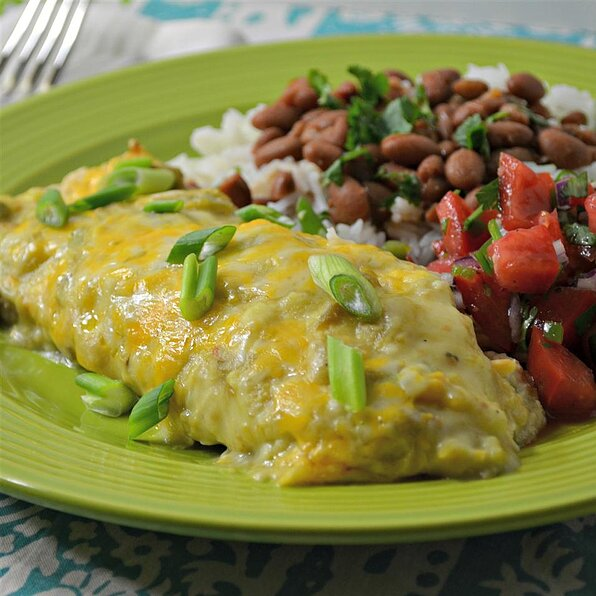

Green Chili Chicken Enchiladas

Description
This is the enchilada recipe that you have been craving. In just a few minutes, you may give up takeout for good.
I strongly recommend getting some good chips and salsa to go with this so that you can make this dinner the real deal. Margaritas optional.
Ingredients
- cooking spray (such as Pam®)
- 6 whole wheat tortillas
- (10.75 ounce) can cream of mushroom soup
- ½ (16 ounce) jar green taco sauce
- 1 (4 ounce) can chopped green chilies
- 2 green onions, chopped
- 3 roasted skinless chicken breasts, shredded
- 1 cup shredded Cheddar cheese
Steps
- Prepare a 13x9-inch baking dish with cooking spray
- Wrap tortillas in paper towels moistened with water; cook in microwave until soft, about 20 seconds
- Stir mushroom soup, taco sauce, green chiles, and green onions together in a bowl. Fold chicken into the soup mixture
- Spread chicken mixture into each tortilla, sprinkle small amount of cheese over portion of the chicken mixture, and roll the tortilla around the filling; place with the seam side down in the prepared baking dish. Spread remaining chicken mixture over the rolled tortillas. Sprinkle remaining Cheddar cheese over the chicken mixture
- Cover baking dish with aluminum foil; refrigerate at least 12 hours to overnight
- Remove baking dish from refrigerator. Keep dish at room temperature for 30 minutes
- Preheat oven to 350 degrees F (175 degrees C)
- Bake in preheated oven for 30 minutes. Remove aluminum foil and continue baking until the cheese begins to brown along the edges, about 15 minutes more
Return to home page